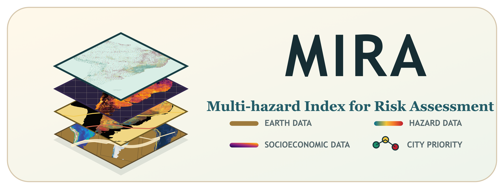

MIRA
This tool has two jobs: explore risk maps and prioritize cities. This short guide shows the path before you start using the full interface.
Hazard maps
People at risk
City priorities
1. Start with Atlas
Use the left panel to choose one map at a time. You can view hazard scores, people-at-risk maps, model inputs, socioeconomic layers, and city classes.
- Use Country focus to zoom to a country.
- Use Choose layer to pick a map from the dropdown.
- Click the map to export values for that pixel.
2. Read one map at a time
The Atlas now shows one layer at a time. This keeps the workflow simple: choose a map, read the legend, then click a place if you need a pixel report.
3. Move to City Priorities
After exploring the map, open City Priorities. Adjust the weights, click a city, and export a Word report if needed.
When you enter the tool, begin with the left panel. It is the control center for the whole workflow.